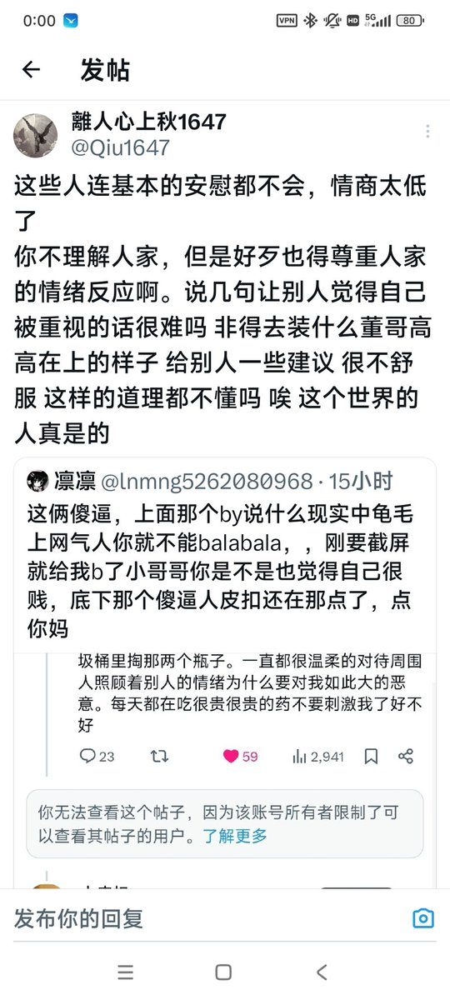

凛凛
@lnmng5262080968
@Qiu1647 抱抱你🥹其实你并不像他说的那么差，他只是不懂教育也不懂你。你很棒没有在打压下走歪也在一点一点强大起来。谢谢你帮我说话

離人心上秋1647
@Qiu1647
＃杂谈壹陆肆柒
我对这种靠着压力和什么丛林法则的话打压别人的行为很厌恶。因为我的父亲是这样的人，每当我遇到挫折时父亲会告诉我"你失败因为你不够努力，你很蠢，你被他人带偏了，你没有思考的能力，你不如其他人"他通过打压的方法让我靠憎恨成长 https://t.co/hXY16EaIuZ